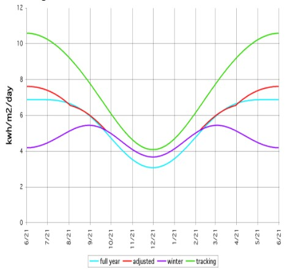
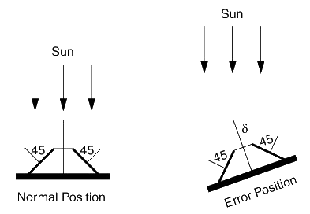
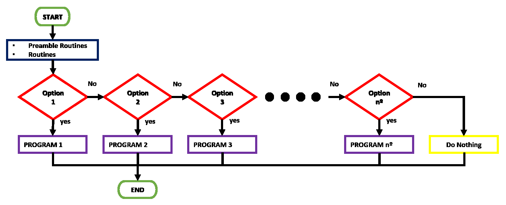
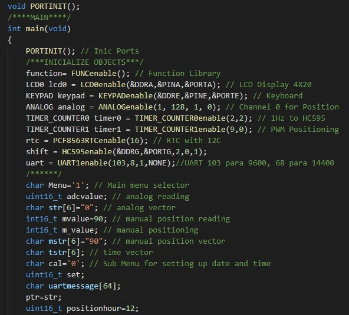
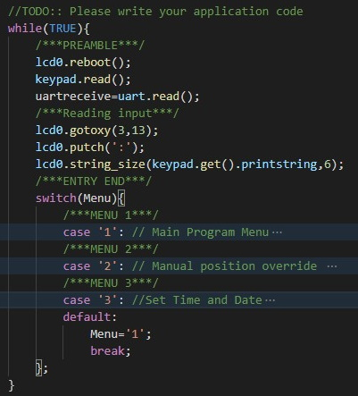
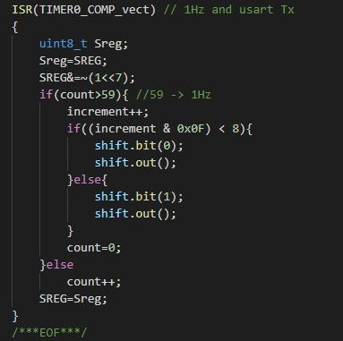
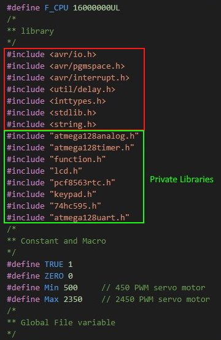

Resumo
O projeto que se pretende fazer é um sistema de posicionamento de painel fotovoltaico para obter maior rendimento
de produção de energia, já que é conhecido que se pode tirar proveito até 40%.
O objetivo é desenvolver um meio de controlo tendo em mente ser um sistema
Stand Alone de tamanho considerável, o trabalho não vai ser concentrado ao redor
do painel fotovoltaico em si e suas características ou modos de funcionamento, mas apenas o sistema de
Sun Track , também supondo que tem baterias de carga com o intuito que o sistema possa
ser autónomo.
O projeto é apenas académico e de simulação em escala pequena ou de bancada.
Apresentação
Os painéis fotovoltaicos tem vários parâmetros que determinam sua eficiência, a temperatura de funcionamento,
otimização da carga, sua orientação e até limpeza são alguns pormenores, este estado de arte apenas é uma
tentativa de melhor garantir tirar maior proveito da energia coletada pelo meio de orientação.

Resposta a inclinação
|
Neste gráfico podemos ver um exemplo da diferença entre o rendimento de sistemas sem controlo de orientação,
orientação parcial e total.
|
|
Mais energia pode ser coletada ao fim do dia se o Painel fotovoltaico tiver instalado um sistema de orientação solar,
através de um atuador mecânico.
Existe dois tipos de sistemas de orientação solar:
[1]
-
Sistema de um eixo, este segue o posicionamento do sol durante o dia de Este a Oeste.
-
Sistema de dois eixos, o mesmo que de um eixo mais a orientação Norte e Sul que tem em consideração a
influencia de inclinação provocada pelas estações do ano.
Estado da Arte
O projeto em causa pertence a disciplina de Laboratório de Sistemas que da
continuidade as disciplinas de Sistemas Digitais
[9], sendo o foco processadores, micro-controladores e
Fpga´s (Field programmable arrays). Um Micro-controlador da ATmel é o que vai
ser usado como o cérebro do sistema, o tipo de sistema de orientação vai ser de um eixo, um servo
motor para simulação de posicionamento e dois sensores LDR
(Light dependent resitor) ligados a uma ponte wheatstone [6] [7] e
amplificador de instrumentação para ajuste fino. Um RTC (Real Time Clock) como ferramenta de posicionamento principal, e disponível um override manual, sendo seus
dados visíveis num LCD (Liquid crystal display).
O motor a ser usado se for numa aplicação real seria de corrente continua de preferência com íman permanente
[2] , com uma caixa redutora e sem fim para que quando estiver em estado de
paragem poder se desligar sem perder sua posição, já que se sabe que a melhor maneira de poupar energia é não
a gastar. Como o objetivo é obter o maior rendimento possível pretende-se não haver desperdício, se houve-se
meio de não usar energia para seu posicionamento seria o ideal.
No mundo das energias renováveis só é justificado sua implementação se for em grande escala pois seus rendimentos
são baixos e intermitentes, e melhor ainda se os preços forem atrativos, a não ser que haja algum avanço tecnológico
de relevo.
O sistema de posicionamento pode aumentar a energia acumulada até 40 %
durante o ano comparado com os sistemas fixos,
durante o dia o painel acompanha a posição dos sol de Este para
Oeste e durante a noite regressa a posição
Este para o
dia seguinte, os sistemas antigos tinham uma bateria para esta operação depois do pôr do sol, os novos modelos já não
utilizam bateria mas usam a luz fraca do por do sol para regressar a origem. [1]
Um dos métodos de orientação solar é usar duas células PV em serie com polarização oposta em ângulo de como
demonstrado na figura:

Principio de Funcionamento Sensor [1]
Assim o atuador mecânico (motor) recebe o diferencial da corrente fornecida, estando assim sempre orientado a fonte
de luz. A corrente no motor é dada pela expressão $I_m = I_1 - I_2 = 2 I_o δ
Sin(45 °) = √ 2 I_o δ se δ é em radianos.
[1]
No Projeto não vai ser usado este método mas um análogo utilizando dois sensores LDR também em serie e a
um do outro dando uma saída proporcional ao desfasamento da fonte de luz apenas para ajuste fino, já que o posicionamento
vai ser sincronizado pelo RTC (relógio), já existe algoritmos criados usando os parâmetros de localização e tempo que
nos fornece os dados do local exato da posição do sol, sendo desnecessário a utilização de sensores, aqui este projeto
é flexível pois já íntegra um relógio RTC (Real time clock) com calendário de atualização automática.
O objectivo deste trabalho é executar um sistema de orientação solar fiavel utilizando um RTC e sensor LDR ,
com sistema interactivo através de display e keypad na qual tem integrado um override de
positionamento manual para
caso de manutenção, também com ligação ao PC através da porta USB para troubleshooting indicado a
leitura da hora e
posição do sensor a pedido, podia também integrar um control total pelo PC através de comandos criados.
Um servo motor vai ser usado como simulação do sistema para comprovar sua orientação e circuito do sensor,
na qual em practica seria aplicado outro tipo de motor, mas para propositos académicos é o mais practico.
Quanto a melhorias, isto como é um sistema programado a imaginação é o horizonte pois com facilidade pode-se
acrescentar funcionalidades ou alterações para preencher o pretendido e desejado.
Programa
|
|
O programa utilizado para executar este projecto foi o Atmel Studio 7 (Version: 7.0.2397), 2019 Microship
Technology.
Já nos é conhecido que a marca Atmel foi comprada pela companhia que representa os PICS ou
seja a Microchip sendo que seu IDE também já supporta seus microcontroladores e programadores,
o MPLAB XC é agora uma boa alternativa.
|
|
Fluxograma
Acima demonstra a metodolgia usada para execução do Programa Principal,
as subrotinas, isto é os programas 1 até 3 obedecem a mesma estrutura,
que esta indicado abaixo, em que o bloco READ INPUTS é partilhado com o Programa Principal.
Também de notar que o bloco READ INPUTS inplica sinais de entrada na qual pode vir de
qualquer origem, isto é também pode ser leituras de saidas, uart, i2c, etc.
Outro pormenor é que só são aceites leituras diferentes das lidas anteriormente,
assim não existe redundância e o programa flui de forma "One Shot" podendo
este entrar e sair pelo sistema sem qualquer interferência se o sinal não for reconhecido,
mas só uma única vez.




Assim temos um sistema escalavel ("recursion") e de fácil manuseamento.
A programação foi feita em linguagem C [3]
aplicado nos integrados da AVR [8].
Anexado [referências] tem links para literatura acerca destes assuntos.
Com a ajuda das librarias criadas e as já existentes é que foi possivel executar este projecto, tornado o programa de facil leitura
e intuitivo na utilização.
Abaixo descrito a lista das libarias usadas no codigo:
|

|
Para explicar o código na sua totalidade é complicado devido a ser muito, tem comunicação I2C para o RTC,
tem USART para comunicar com o PC atravez do chip
FTDI
, tem leitura ADC e o Servo Motor, além dos pormenores de funcionalidade de
cada componente, tais como o LCD e KEYPAD, a forma como foi concebido as librarias e o vasto trabalho na
sua execução. Dai acho melhor se for por demonstração.
|
|
O sistema de posicionamento fotovoltaico tem diversas soluções de diferentes Empresas que apostam nas energias
renováveis, diferentes métodos na parte mecânica e elétrica, como esta disciplina pertence na área digital,
considero importante a manipulação dos datasheets dos componentes e o código, manipular o hardware unicamente
por programação através de uma camada de interface [API] acho de maior importância pois cria uma abstração
dos problemas que podemos enfrentar e os resolver seguindo uma metodologia sintática, sendo possível o manipular
para fazer o que é requerido e desejado. Através do código podemos alterar, modificar e adaptar qualquer projeto
ao mundo exterior usando uma linguagem de nível alto ou médio com facilidade.
Dai este projeto pode ser atualizado a qualquer altura acrescentando funcionalidades e dispositivos que possam
beneficiar sua performance, caso necessário.
Este projeto esta online no link descrito,
https://github.com/sergio1020881/LABSIS20202021/tree/main/Relatorio_2
,
tudo que é necessário para o desenvolver e executar esta ao dispor, o programa usado foi o Atmel Studio 7 basta
fazer download, compilar e programar o chip [ATmega128], e depois ligar os periféricos respeitando as ligações.
Dado este trabalho como concluido, posso dizer que satisfiz os objectivos pretendidos, existe sempre a
possibilidade de alterações, mas considero que esta funcional e practico, como um exercicio académico,
para aplicar na vida real necessita apenas de pequenas alterações, como utilizar um motor diferent para
supportar a carga precisa.
Neste projecto não inclui a parte mecânica toda, além da restante instalação do sistema electrico
que um painel fotovoltaico necessita.
LIVROS
[1]
Mukund R. Patel
—
Wind and Solar Power Systems Design, Analysis and Operation Second Edition
,
Taylor & Francis Group LLC, 2006.
[2]
Stephen W Fardo, Dale R. Patrick
—
Electrical Power Systems Technology, Third Edition
,
CRC Press, 2008.
[3]
Brian W. Kernighan, Dennis M. Ritchie
—
The C Programming Language, Second Edition
,
Prentice Hall, Software Serries.
[4]
Stephen W. Fardo, Dale R. Patrik
—
Electrical Power Systems Technology, Third Edition
,
The Fairmont Press, 2009.
[5]
George Chryssis
—
High-Frequency switching Power Supplies: Theory and Design, Second Edition
,
McGraw Hill Book, 1989.
[6]
Rudolf F. Graf, William Sheets
—
Encyclopedia of ELECTRONIC CIRCUITS, Volume 4
,
TAB BOOKS (McGraw Hill), 1992.
[7]
Hank Zumbahlen
—
Linear Circuit Design Handbook
,
Analog Devices, 2008.
[8]
Steven F, Barret
—
Embedded Systems Design with the Atmel AVR Microcontroller
,
Morgan Claypool Publishers, 2009.
Manuais
[9]
Sistemas Digitais 2, ISEP;
Tranparências de Sistemas Digitais 2, 2008/2009.
[15]
ET-Base AVR Easy 32U4, ETT;
ET-Base AVR Easy 32U4.
[16]
ET-Base AVR 88, ETT;
ET-Base AVR 88.
[17]
ET-Base AVR 128, ETT;
ET-Base AVR 128.
[18]
ET-Base AVR 1280, ETT;
ET-Base AVR 1280.
[19]
ET-Base PIC 8722, ETT;
ET-Base PIC 8722.
WebSites
[10]
science.nasa.gov;
https://science.nasa.gov/science-news/science-at-nasa/2002/solarcells
[11]
app.diagrams.net;
https://app.diagrams.net/
Datasheets
[12]
Datasheet Atmega 128;
Micro-controlador Atmega128
[13]
Datasheet PCF8563;
RTC (Real Time Clock)
[14]
Datasheet INA128;
Amplificador de Instrumentação
[14]
Datasheet MM74HC595;
Shift Register HC595